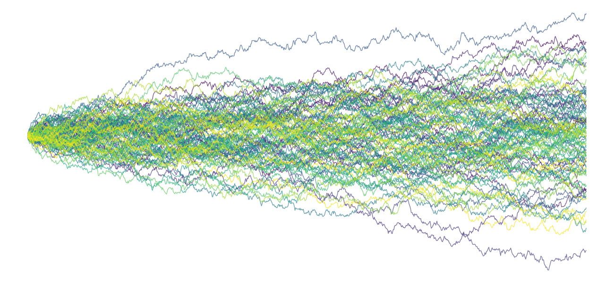
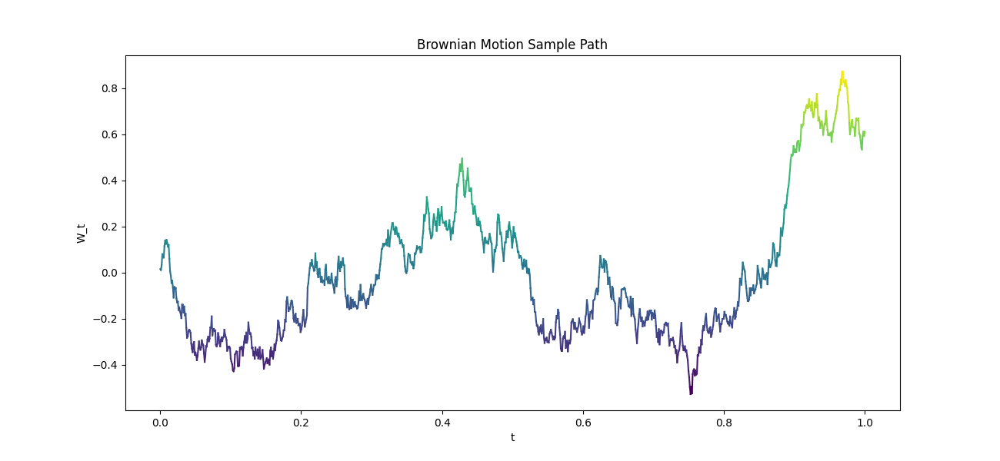
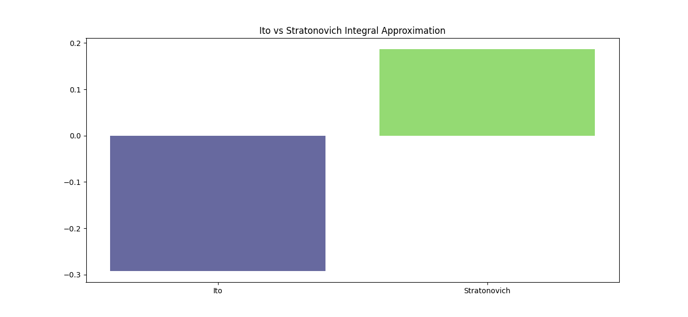
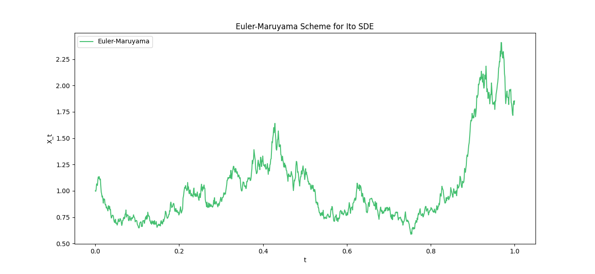
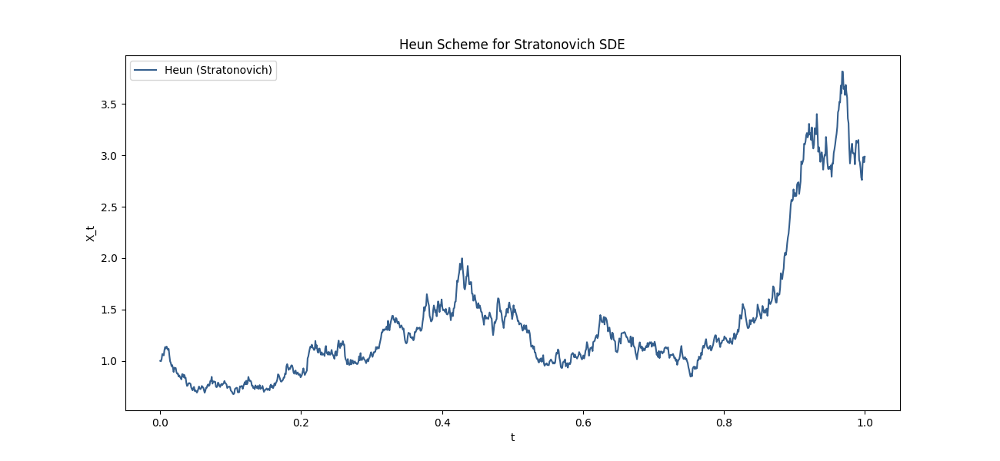
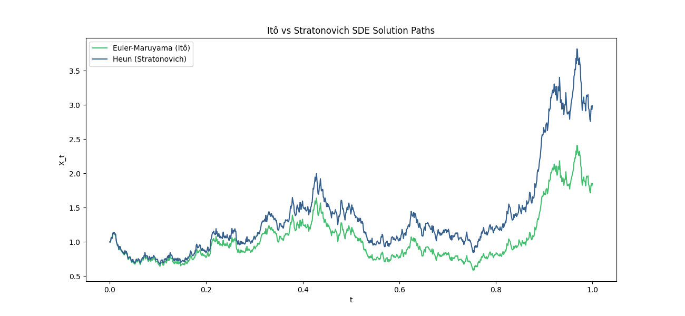

Hugo NGUYEN, April 2026

Disclaimer: This document may content mistake, it is only made to summarize and keep track on notions I work on during my thesis.
Stochastic differential equations provide a natural framework to model dynamical systems subject to randomness. At the core of this theory lies a fundamental difficulty: how should one define integration with respect to a highly irregular signal such as Brownian motion? Unlike classical paths, Brownian trajectories are almost surely nowhere differentiable, which prevents any direct application of standard Riemann–Stieltjes integration.
This difficulty leads to two distinct, yet mathematically consistent, constructions of stochastic integrals: the Itô integral and the Stratonovich integral. These two interpretations correspond to different limiting procedures and encode different notions of how information is used along the trajectory. While they are equivalent up to a correction term, they lead to distinct calculus rules and interpretations.
The purpose of this note is to present both constructions in a rigorous and pedagogical manner, to clarify their differences and their equivalence, and to illustrate these concepts through numerical simulations. Particular attention is given to their respective domains of application: Itô calculus is predominant in mathematical finance due to its non-anticipative nature, whereas Stratonovich calculus appears naturally in physics and has recently gained renewed interest in machine learning.
Throughout this document, we work on a filtered probability space satisfying the usual conditions.
A standard Brownian motion is a stochastic process such that almost surely, it has independent increments, and for all , . Its trajectories are almost surely continuous.
A fundamental property is its quadratic variation:
This implies that Brownian paths are nowhere differentiable, which makes classical integration inapplicable. In particular, the limit of Riemann sums depends on the choice of evaluation points.
A numerical simulation illustrates the irregularity:
import numpy as np
import matplotlib.pyplot as plt
T, N = 1.0, 1000
dt = T / N
t = np.linspace(0, T, N)
W = np.cumsum(np.sqrt(dt) * np.random.randn(N))
plt.plot(t, W)
plt.title("Brownian Motion Sample Path")
plt.xlabel("t")
plt.ylabel("W_t")
plt.show()

Let be an adapted process such that
The Itô integral is defined as the -limit:
This construction enforces non-anticipativity since is measurable with respect to .
A central property is the Itô isometry:
Numerical approximation:
ito_sum = np.sum(W[:-1] * np.diff(W))
print("Ito approximation:", ito_sum)
The Stratonovich integral is defined by symmetric approximations:
This definition restores the classical chain rule, making it closer to standard calculus.
Numerical approximation:
strat_sum = np.sum((W[:-1] + W[1:]) / 2 * np.diff(W))
print("Stratonovich approximation:", strat_sum)
The two integrals differ by a correction term. For a smooth function ,
This discrepancy arises from the quadratic variation of Brownian motion.

In practice, this difference is reflected directly in numerical simulations. For instance, when approximating both integrals along the same Brownian trajectory, one may obtain values such as for the Itô integral and for the Stratonovich integral. The difference corresponds precisely to the discrete approximation of the correction term .
Let . Then:
In contrast, in the Stratonovich sense:
Example with :
In mathematical finance, stochastic integrals are interpreted in the Itô sense. The non-anticipative property ensures that trading strategies depend only on present information. This is consistent with the absence of arbitrage and the construction of risk-neutral measures.
The Black–Scholes model is a canonical example where Itô calculus is essential. In its general form, the price of a risky asset is modeled by the stochastic differential equation
where is the drift (expected return), the volatility, and a standard Brownian motion. Under a risk-neutral measure, the drift is replaced by the risk-free rate, and the Itô framework enables the derivation of the associated pricing partial differential equation via Itô’s lemma.
Stratonovich integrals arise naturally in the limit of systems with smooth noise approximations. They preserve geometric structures and satisfy the classical chain rule, making them particularly suitable for modeling physical systems.
In machine learning, they appear in continuous-time models such as Neural Stochastic Differential Equations, where invariance and differentiability properties are desirable. A typical Stratonovich formulation of such a model is
where and are neural networks parameterized by .
The Stratonovich interpretation is often preferred in this context because it is compatible with standard calculus rules, facilitating backpropagation through continuous dynamics and preserving invariances under smooth transformations of the state space.
Here is a refined version of your section that makes the Hessian / Itô’s lemma connection explicit while staying clean and readable.
Although Itô and Stratonovich integrals are defined differently, they describe equivalent stochastic processes up to a correction in the drift term. In practice, one can convert from one formulation to the other depending on which is more convenient: Itô calculus is typically preferred for probabilistic analysis, while Stratonovich calculus is often more natural for modeling and geometric reasoning.
The origin of this correction can be understood through Itô’s lemma. For a smooth function , it states that
where denotes the Hessian. This second-order term has no analogue in classical calculus and is precisely what distinguishes the Itô and Stratonovich interpretations.
Consider:
The equivalent Stratonovich form is:
This correction term arises from the second-order contribution in Itô’s lemma and can be seen as the one-dimensional manifestation of a Hessian effect.
Here is a clean version with bold vector/matrix notation and slightly tightened rigor/notation.
More generally, consider a -dimensional process solving
where:
The equivalent Stratonovich SDE is
where denotes the j-th column of .
In coordinates, the correction can be written more explicitly as
which highlights that it is a directional derivative of the vector field along itself.
This formulation makes the link with Itô’s lemma explicit: the drift correction aggregates the same second-order effects that appear through the Hessian term in the multidimensional Itô formula, but expressed intrinsically in terms of derivatives of the diffusion field.
This makes explicit that the Itô–Stratonovich correction is fundamentally a second-order phenomenon:
The Euler–Maruyama scheme for Itô SDEs:
is the simplest and most widely used discretization method. It is explicit and easy to implement, but only achieves strong order 1/2 convergence.
For Stratonovich equations, midpoint-based schemes such as Heun’s method are more appropriate, as they better capture the underlying interpretation of the stochastic integral. A typical scheme is
where is a predictor step.
This scheme approximates the midpoint evaluation required by the Stratonovich integral. However, it introduces additional computational cost and implicitness through the midpoint term, and its accuracy can degrade when the diffusion coefficient is highly nonlinear or when time steps are not sufficiently small.



The Itô and Stratonovich integrals provide two consistent frameworks for stochastic integration. The Itô formulation is adapted to probabilistic modeling and finance, while the Stratonovich formulation aligns more closely with classical calculus, geometric reasoning, and differential structure.
Beyond this equivalence, the Stratonovich formulation becomes particularly advantageous in high-dimensional settings, where geometric structure and coordinate invariance play a central role. In such regimes, it provides a natural foundation for constructing latent stochastic representations, where a complex high-dimensional system can be projected onto a lower-dimensional latent space governed by an effective SDE. This perspective is especially relevant in modern machine learning and data-driven modeling, where one seeks compact dynamical representations that preserve the essential stochastic structure of the original system.